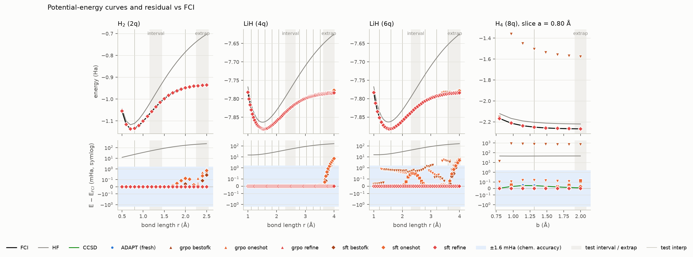
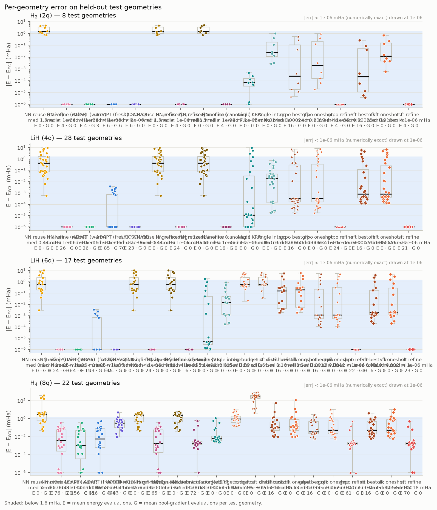
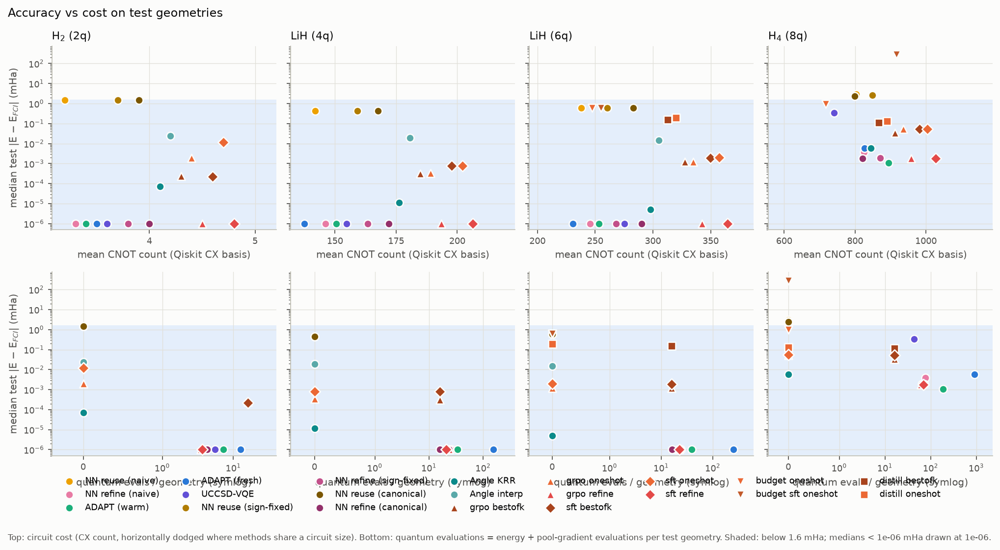
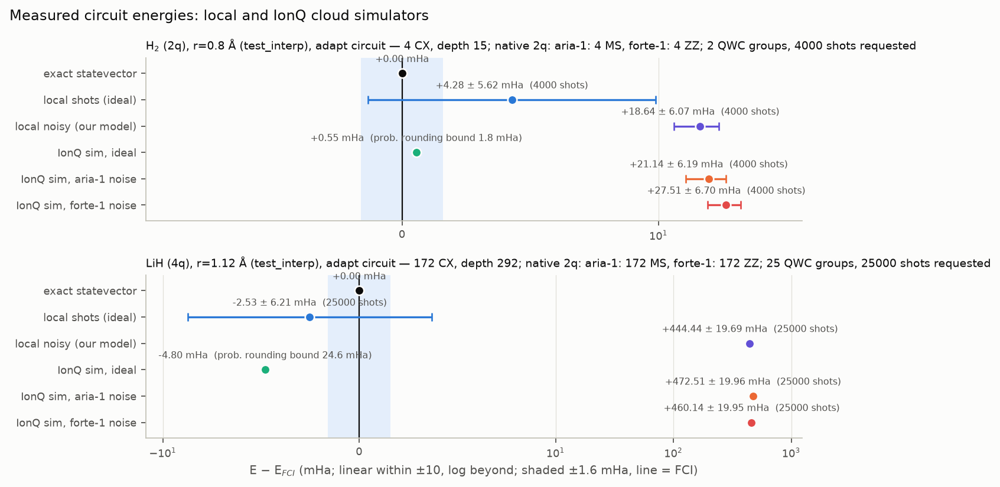
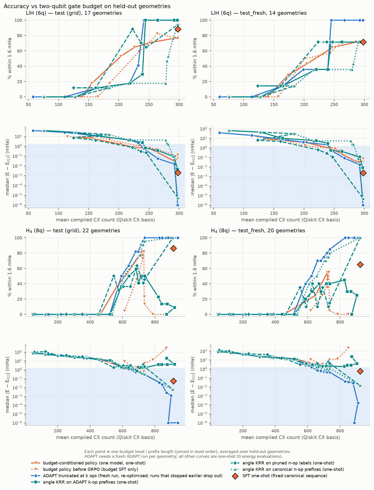
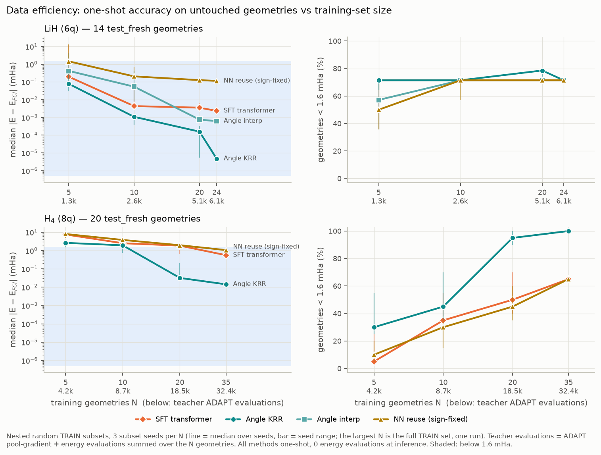
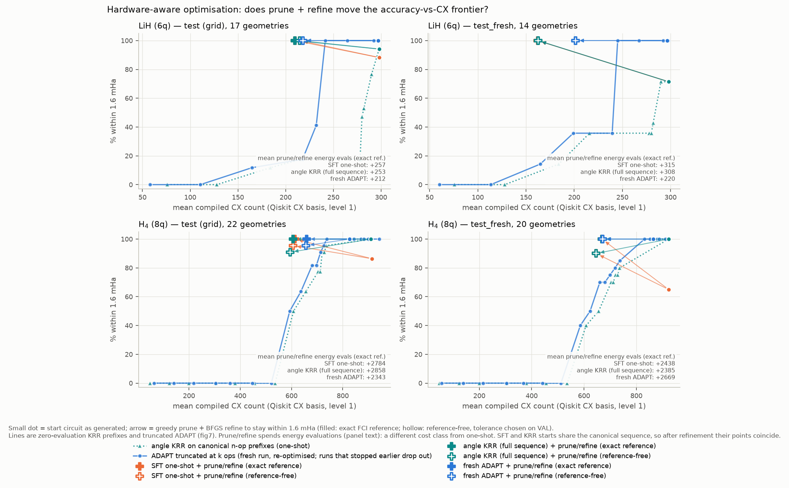

Team The Quantubians · Qollab × IonQ Global Quantum Hackathon 2026
GenQAI: one-shot quantum chemistry circuits
Give it a molecule and a bond length. A trained model writes the complete ground-state circuit, every operator and rotation angle, in one forward pass, with zero quantum evaluations to propose it.

How it works
Quantinuum, NVIDIA and Pfizer's ADAPT-GQE trains a model on ADAPT-VQE circuits so that, for a new geometry, it skips ADAPT's operator search and VQE loop. We rebuilt that pipeline in Qiskit at hackathon scale. One run on Qollab goes through five stages, in order:
-
1
Molecule
Pick a system (H₂, LiH, or the H₄ chain) and type any bond length in Å.
-
2
Hamiltonian
PySCF builds the qubit Hamiltonian live in your browser and prints the Hartree–Fock and exact FCI energies.
-
3
One forward pass
The trained transformer proposes the full circuit (NumPy, about 20 ms). Zero quantum evaluations to propose.
-
4
Grading
The circuit is scored exactly against FCI, next to kernel-ridge regression, nearest-neighbour reuse and a live ADAPT-VQE run with the quantum evaluations it needed.
-
5
IonQ execution
Qollab's IonQ gateway takes one circuit per run, so every measurement basis is packed onto separate qubits of one circuit (H₂: 2 groups on 4 qubits).
Results
Scored once on test_fresh: geometries drawn with a fixed seed after development finished. Chemical accuracy is |E − EFCI| ≤ 1.6 mHa.
| Method | Median error | Worst | Within 1.6 mHa | CX | Quantum evals |
|---|---|---|---|---|---|
| Fresh ADAPT-VQE | 0.000 mHa | 0.10 | 100% | 865 | 949 |
| Our transformer, one shot | 0.56 mHa | 14.6 | 65% | 923 | 0 |
| Transformer + angle refinement | 0.002 mHa | 0.57 | 100% | 923 | 48 |
| Kernel-ridge regression, one shot | 0.014 mHa | 0.59 | 100% | 923 | 0 |
| Copy nearest circuit, orbital signs not fixed | 4.2 mHa | 520 | 35% | 898 | 0 |
What we found
- One-shot proposals work for trained molecules. Median 0.002 mHa (LiH) to 0.56 mHa (H₄) with zero quantum evaluations, where ADAPT needs 155–949 per geometry.
- The key ingredient is fixing PySCF's orbital sign gauge, not the transformer. With it, plain kernel-ridge regression matches or beats our transformer at every training-set size. Without it, reusing the nearest circuit misses by up to 520 mHa.
- RL (GRPO) and self-distillation did not improve held-out accuracy. Budget-conditioned GRPO cut H₄ circuits from 914 to about 720 CX, but regression on a shorter fixed circuit was better at the same gate count.
- Pruning plus re-optimisation reaches 100% chemical accuracy at about 600–670 CX on H₄ (from 923), at the cost of thousands of energy evaluations.
- One-shot methods fail beyond the training range. Refinement or ADAPT recovers.
- On IonQ's Forte 1 noise model, gate count dominates. H₂ (4 CX) measured +7.8 ± 5.8, +16.8 ± 6.0 and +25.0 ± 6.4 mHa across three runs, and a custom HeH⁺ +36.1 ± 11.0 mHa. LiH's 172-CX circuit is about 460 mHa off under noise.
Figures
Generated by scripts/make_figures.py from the result files in the repo. Select a figure to open it full size.














Workbench: any small molecule
The repo also ships a local workbench (streamlit run app/workbench.py). Enter a molecule as SMILES or XYZ, set charge, spin and active space, and it builds the Hamiltonian, says whether a trained model covers it, and routes it. Only H₂, LiH and the H₄ chain have trained generators, so a new molecule takes the conventional-solver route (ADAPT), and the workbench says so.
| Molecule | Input | Charge / mult. | Active space | Qubits | FCI (Ha) | Quantum evals | Error | CX | IonQ packed fit |
|---|---|---|---|---|---|---|---|---|---|
| HeH⁺ | XYZ | +1 / 1 | 2e / 2o | 2 | −2.851024 | 66 | 0.0000 mHa | 4 | yes (8 qubits) |
| H₂O | SMILES O | 0 / 1 | 4e / 4o | 6 | −74.971616 | 243 | 0.0005 mHa | 262 | no (48 groups) |
| OH• | SMILES [OH] | 0 / 2 | 5e (3α, 2β) / 4o | 6 | −74.380209 | 168 | 0.0000 mHa | 202 | no (24 groups) |
HeH⁺ on IonQ's Forte 1 noise-model simulator (1,000 shots, 4 measurement groups packed into one 8-qubit circuit): +36.1 ± 11.0 mHa from FCI. The exact energy of the same circuit is at FCI, so the gap is shot noise plus IonQ's noise model.
What we don't claim
- That the transformer beats simple regression here. It doesn't: kernel ridge matches or beats it.
- Wall-clock speedups at 2–8 qubits. Exact diagonalisation is instant at this size.
- Quantum advantage.
The honest contribution is a complete, open, Qiskit-native reproduction of the architecture, an untouched-test benchmark against strong baselines, and the gauge-fixing finding, which any learned or reuse-based circuit generator for molecules has to handle.